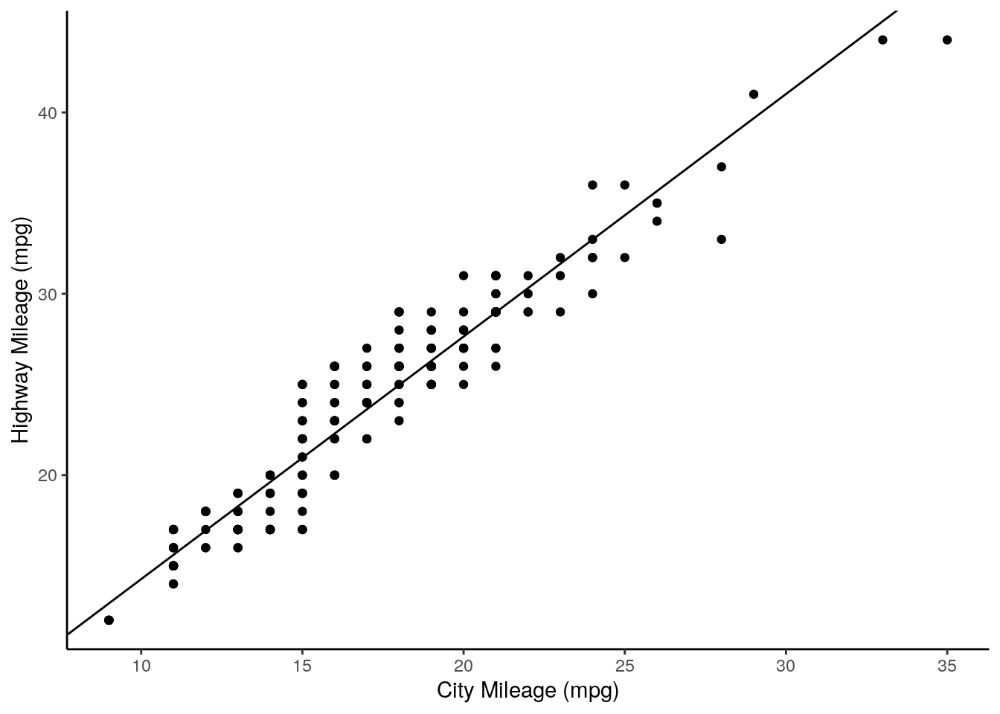

4.8 Linear Regression
Before doing GWAS, we’re going to learn about using linear models in R.
Loading a datset:
## manufacturer model displ year
## Length:234 Length:234 Min. :1.600 Min. :1999
## Class :character Class :character 1st Qu.:2.400 1st Qu.:1999
## Mode :character Mode :character Median :3.300 Median :2004
## Mean :3.472 Mean :2004
## 3rd Qu.:4.600 3rd Qu.:2008
## Max. :7.000 Max. :2008
## cyl trans drv cty
## Min. :4.000 Length:234 Length:234 Min. : 9.00
## 1st Qu.:4.000 Class :character Class :character 1st Qu.:14.00
## Median :6.000 Mode :character Mode :character Median :17.00
## Mean :5.889 Mean :16.86
## 3rd Qu.:8.000 3rd Qu.:19.00
## Max. :8.000 Max. :35.00
## hwy fl class
## Min. :12.00 Length:234 Length:234
## 1st Qu.:18.00 Class :character Class :character
## Median :24.00 Mode :character Mode :character
## Mean :23.44
## 3rd Qu.:27.00
## Max. :44.00There is now an object in memory called mpg, which is a dataframe with 11 variables.
The mpg of cars in a city and the mpg on the highway are encoded in the columns cty and hwy, respectively.
First, plotting these out:
ggplot(mpg, aes(x = cty,
y = hwy)) +
xlab("City Mileage (mpg)") +
ylab("Highway Mileage (mpg)") +
geom_point() +
theme_classic()We can use the function lm() to implement a linear model.
##
## Call:
## lm(formula = hwy ~ cty, data = mpg)
##
## Coefficients:
## (Intercept) cty
## 0.892 1.337This first argument, formula is what determines the variables we are regressing, with the tilde (~) sign separating dependent and independent variables. For example, the above formula asks to create a linear model where highway mileage is expressed as a function of city mileage. In other words, we’re doing the good old algebra \[y = mx + b\] except here it’s \[highway = m * city + Intercept\].
We can extract the intercept and coefficient as such:
## (Intercept)
## 0.8920411## cty
## 1.337456Let’s add this to our plot:
ggplot(mpg, aes(x = cty,
y = hwy)) +
xlab("City Mileage (mpg)") +
ylab("Highway Mileage (mpg)") +
geom_point() +
theme_classic() +
geom_abline(slope = regression$coefficients[2],
intercept = regression$coefficients[1])
Lastly, let’s get some p values out from this. First, we get a summary of our model:
regression <- lm(formula = hwy ~ cty, data = mpg)
sumRegression <- summary(regression)
print(sumRegression)##
## Call:
## lm(formula = hwy ~ cty, data = mpg)
##
## Residuals:
## Min 1Q Median 3Q Max
## -5.3408 -1.2790 0.0214 1.0338 4.0461
##
## Coefficients:
## Estimate Std. Error t value Pr(>|t|)
## (Intercept) 0.89204 0.46895 1.902 0.0584 .
## cty 1.33746 0.02697 49.585 <2e-16 ***
## ---
## Signif. codes: 0 '***' 0.001 '**' 0.01 '*' 0.05 '.' 0.1 ' ' 1
##
## Residual standard error: 1.752 on 232 degrees of freedom
## Multiple R-squared: 0.9138, Adjusted R-squared: 0.9134
## F-statistic: 2459 on 1 and 232 DF, p-value: < 2.2e-16From the Coefficients, we want to get the value of Pr(>|t|). We can access Coefficients using the $ operator:
## Estimate Std. Error t value Pr(>|t|)
## (Intercept) 0.8920411 0.46894568 1.902227 5.838000e-02
## cty 1.3374556 0.02697315 49.584698 1.868307e-125And now we can index this to get our p value:
## [1] 1.868307e-125This is a very low p value, reflecting the strongly non-zero slope of our regression line.